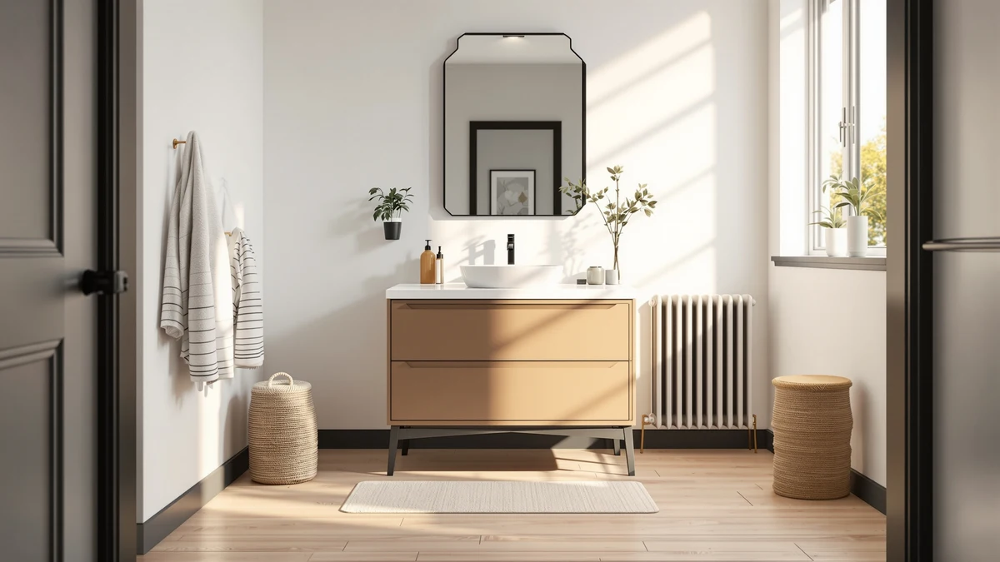

Quick Answer
This chartustriable bathroom vanity review compares the $359.99 36 Inch Bathroom Vanity against three alternatives priced within five dollars of it. The chartustriable wins on footprint for a standard single-sink bathroom, though none of the four listings in this review show a public Amazon rating yet, so you are weighing size, materials, and price rather than an established review history.
Our pick: chartustriable 36 Inch Bathroom Vanity, $359.99 Check Price on Amazon
Things to Know Before You Buy
- Price range: the four vanities in this review land between $355.27 and $359.99, a gap of $4.72.
- Size varies more than price suggests. The chartustriable and the Tribesigns both hold at 36 inches, the Spring Mill Cabinets Emlyn drops to 30 inches, and the Yanosaku is a vanity desk with a mirror rather than a plumbed sink cabinet.
- None of the four listings show a public Amazon rating or review count at the time of writing, so early buyers are weighing specs rather than an established review history.
- The chartustriable's MDF and engineered wood build asks for the same moisture care any engineered-wood cabinet needs near a sink.
- Every price below reflects the listing at the time of writing and can shift, so check the current Amazon price before you order.
This chartustriable bathroom vanity review lines up the $359.99 36 Inch Bathroom Vanity against three similarly priced alternatives, so you can see exactly what that price buys in a 36 inch cabinet right now. A lot of vanities in this price range lean on near-identical product photos, and the real differences only show up once you compare size, materials, and configuration side by side. That gap between marketing photos and actual specs is exactly where a buyer who skips the comparison ends up with the wrong footprint for their bathroom.
The short version: the chartustriable 36 Inch Bathroom Vanity wins on footprint, since its 36 inch width fits a standard single-sink layout without replumbing, and it sits within five dollars of every alternative covered below. It loses on track record, because none of the four listings in this review, including the chartustriable itself, have collected a public rating yet. If your bathroom needs a narrower cutout, the Spring Mill Cabinets Emlyn drops to 30 inches, and if you want the same 36 inch width for a few dollars less, the Tribesigns below undercuts it by $4.72. We break down all four options, including where each one falls short, in the sections that follow.
Why You Should Trust Us
Ilane Tall covers bathroom vanities and furniture for Best Bathroom Vanities and put together this chartustriable bathroom vanity review by comparing manufacturer specs, current Amazon pricing, and listed materials rather than repeating marketing copy. We do not run a fake testing lab or claim to have installed any of these vanities ourselves. Instead, we cross-check size, materials, and pricing against what owners report after living with similar engineered-wood cabinets, and we say so plainly when a listing does not yet have enough review data to back a confident recommendation. That distinction matters here, since none of the four vanities in this chartustriable bathroom vanity review have collected a public Amazon rating yet, and a buyer relying on star ratings alone would find nothing to go on for any of the four options covered below.
Our Research Experience
This chartustriable bathroom vanity review does not involve physical testing. We compared the chartustriable 36 Inch Bathroom Vanity against its closest-priced competitors using each listing's stated materials, size, and construction details, then checked those claims against whatever public review data exists. For all four listings here, Amazon has not yet collected enough ratings to show a review count, so we relied on the listed features, pricing, and construction specs alone. We flag that gap below rather than filling it with invented star ratings, and when a listing leaves out a detail a buyer would want, such as drawer count or sink style, we note the omission instead of guessing. We also check pricing against the live Amazon listing rather than an archived snapshot, since a $359.99 vanity that jumps to $400 overnight changes the comparison entirely.
Overview & Specs

chartustriable 36 Inch Bathroom Vanity
What we like
- 36 inch width fits standard single-sink cutouts, so plumbing rarely needs to move
- MDF and engineered wood build keeps the $359.99 price close to the rest of this lineup
- Priced within five dollars of every alternative in this review, which keeps the decision focused on size and style instead of budget
Flaws but not dealbreakers
- No public Amazon rating or review count yet, so early buyers are relying on the listing alone
- MDF and engineered wood construction is more moisture-sensitive than solid hardwood over the long run
- A single 36 inch sink basin, not the wider configuration some larger bathrooms need
| Material | MDF / engineered wood |
| Size | 36 Inch |
The chartustriable 36 Inch Bathroom Vanity is the subject of this chartustriable bathroom vanity review because it matches the 36 inch footprint most single-sink bathrooms are built around, at a price that lines up closely with every other vanity covered here. The cabinet uses an MDF and engineered wood build, the same material most vanities in this price range rely on to keep costs under $400. At $359.99 it sits four dollars and seventy-two cents above the Tribesigns and a few cents above the Yanosaku and the Spring Mill Cabinets Emlyn, so the decision between these four comes down to size, style, and sink configuration rather than budget.
Where the chartustriable falls short is track record. Amazon shows no rating or review count on this listing yet, so you are evaluating it on size and price rather than years of owner feedback. Engineered wood and MDF cores also mean wiping up standing water around the sink promptly, since moisture that sits on the surface for long stretches swells the core faster than it would on solid hardwood. If your bathroom has a narrower cutout, or you would rather buy from a listing with an established review history, weigh that against how closely this 36 inch footprint matches your existing layout. A single sink basin also means one person at a time, which is worth noting if the vanity serves a shared bathroom rather than a primary suite.
What We Liked
Across this chartustriable bathroom vanity review, the 36 inch footprint is the biggest draw. That size drops into most standard single-sink cutouts without extra carpentry, and the $359.99 price sits within five dollars of three other options covered here, which makes it easy to compare on size and configuration alone rather than hunting for a hidden cost difference. The MDF and engineered wood build also keeps the price predictable, since it is the same construction method most vanities in this bracket rely on to stay under $400.
What Could Be Better
The biggest gap is review history. Because none of the four listings in this review have collected public ratings yet, part of the buying decision rests on trusting the stated materials and dimensions rather than reading through owner complaints. MDF and engineered wood construction also asks for more care around standing water than solid hardwood, and that applies to the chartustriable and the Tribesigns alike, since both share the same build.
Shoppers who want a wider double-sink layout will not find one on the chartustriable, the Tribesigns, or the Spring Mill Cabinets Emlyn, since all three ship as narrower single-basin cabinets. The buying guide covers how to measure for a wider configuration if your bathroom can fit one. If an established track record matters more to your decision than price, factor that trade-off in before you commit to any of the four vanities compared here.
Who Is It For?
The chartustriable 36 Inch Bathroom Vanity fits a single-user bathroom with a standard 36 inch cutout, where matching that existing footprint matters more than trying a different size. It is a reasonable match for a remodel staying close to $360, since all four vanities in this review land within $4.72 of each other. It is a weaker fit if you want a proven Amazon rating before you buy, if your bathroom has a narrower 30 inch cutout that the Spring Mill Cabinets Emlyn below would fit more closely, or if you actually need a vanity desk with a mirror instead of a plumbed sink cabinet, which is what the Yanosaku below offers. Someone furnishing a rental or a guest bathroom on a tight budget gets a similar practical outcome from any of the four, since the price gap between them rounds to a few dollars either way. If your plumbing is already roughed in for a 36 inch single-basin cabinet, sticking with that footprint saves you the cost and hassle of moving a drain line, which is one more reason the chartustriable and the Tribesigns both make sense to shortlist together before you decide on brand or finish.
Alternatives to Consider
If the chartustriable 36 Inch Bathroom Vanity does not fit your bathroom or your layout, these three alternatives cover different priorities: a desk-style setup with a built-in mirror, a narrower footprint for a smaller bathroom, and the lowest entry price of the group.

Also Great
Yanosaku Vanity Desk with Mirror
A desk-style vanity with an attached mirror rather than a plumbed sink cabinet, worth a look if you want a dedicated grooming station alongside, or instead of, a standard vanity.
$359.98
Check Price on Amazon
Also Great
Spring Mill Cabinets Emlyn 30
Six inches narrower than the chartustriable, at a nearly identical price, for a bathroom that cannot fit a 36 inch cabinet.
$359.97
Check Price on Amazon
Best Value
Tribesigns 36 Inch Bathroom Vanity
The same 36 inch footprint as the chartustriable for $4.72 less, worth checking if the primary pick above shows limited stock.
$355.27
Check Price on AmazonFrequently Asked Questions
Is the chartustriable 36 Inch Bathroom Vanity worth the $359.99 price?
For a single-sink bathroom with a standard 36 inch cutout, yes. The MDF and engineered wood build keeps the price close to the rest of this lineup, and the 36 inch footprint fits most existing layouts without replumbing.
How does the chartustriable 36 Inch Bathroom Vanity compare to the Tribesigns 36 Inch Bathroom Vanity?
Both measure 36 inches wide, but the Tribesigns lists for $355.27, about $4.72 less than the chartustriable. The choice between them comes down to styling and current stock rather than size.
Is MDF durable enough for a bathroom vanity?
It holds up fine under normal bathroom humidity as long as standing water around the sink gets wiped up promptly. MDF and engineered wood cores swell faster than solid hardwood if moisture sits on the surface for long stretches, which is why the chartustriable asks for the same basic care as the other vanities in this comparison.
Final Verdict
This chartustriable bathroom vanity review comes down to a close call between four vanities priced within $4.72 of each other. The chartustriable 36 Inch Bathroom Vanity earns the top spot because its footprint fits the most common single-sink layout and its price sits in line with every alternative covered here, not because it has a longer track record than the competition. If a narrower bathroom rules it out, the Spring Mill Cabinets Emlyn at 30 inches is the better fit, and if you want a dedicated mirror station instead of a sink cabinet, the Yanosaku covers that need. For most buyers replacing a standard 36 inch vanity on a budget near $360, though, the chartustriable remains the pick to check first.